来源：https://s296cam1nz.feishu.cn/docx/JcoldSFjYoc6wQxUsdncNFJNn2d
RPA+AI让内容创作提效10倍？这份保姆级教程喂饭到你嘴里！
Hello，我叫米斗，我是AI商业提效实战教练，擅长用「AI + 设计 + 内容」的方法，帮助中小创作者与品牌主打造能赚钱的个人IP与高转化产品体系。
搭档岳嘉，操盘100+公众号矩阵的生财圈友！4月深圳聚会我们聊爆 AI+RPA ，联手花一天磨出这篇干货！点赞评论转发三连，解锁更多提效秘籍！
你好，我是米斗，日常在公众号【米斗玩赚AI】分享各种「保姆级AI实战教程」。
今天这篇内容，不是我一个人写的，是和我非常欣赏的AI实战派——岳嘉老师，一起合作完成的。
事情得从4月一次线下小聚说起。那天岳嘉老师组织了一场AI实战爱好者的聚会，大家围坐一圈，聊的核心问题就一句话：
“AI这么强，我们该怎么结合自己行业，用好RPA+AI，让效率提10倍以上？”
越聊越兴奋，我们发现太多人还停留在“AI能干嘛”的阶段，而不是“AI怎么用得上、落得地、做得深”。
岳嘉老师说：“你擅长写保姆级教程，我把我这套本地流量+AI的打法讲给你，你来写，能帮到很多人。”
于是就有了你现在看到的这篇内容。
我们从场景需求出发，从工具选择到实操流程，掰开揉碎、全流程截图演示，一步一步带你做。
你可以直接复制、套用、照着做。
这一套实战打法，来自我们真实操盘的项目经验，不是拼凑，不是概念，是真正能落地、能提效的干货。
公众号【米斗玩赚AI】主理人
AI工具实战玩家，擅长“把复杂的AI操作，写成普通人能看懂能上手的教程”
代表作包括字体图片版权、用DeepSeek做IP定位、AI数字人视频、全自动写公众号等系列教程。
口号：知识不值钱，改变才值钱。
精华帖：【生财认知】老板与设计师必读:字体和图片如何避免侵权
https://t.zsxq.com/tPpZ7
精华帖：【生财技能】如何用DeepSeek结合个人优势做差异化定位?
https://t.zsxq.com/tPpZ7
精华帖：【生财技能】如何用DeepSeek协助IP创作公众号文章
https://t.zsxq.com/AMfrF
【保姆级教程】新手小白如何做出自己的第一条AI数字人视频
https://t.zsxq.com/4c0Jm
深圳本地流量操盘手
从线下销售小白起步，到打造100+公众号矩阵、40+视频号矩阵
擅长AI+私域+SEO自动化增长体系
只花一天时间搞定公众号一个月的更新量，一天创作100篇高质量公众号文章，符合“米斗玩赚AI”风格（AI工具、效率提升、创业干货），完成文章创作并定时发布到公众号上（一周文章更新仅需半天即可完成）。
当前流程：搜索同行文章→下载标题和内容→AI改写→手动排版→发布。
目标：收集50-100篇优质对标文章，提取标题和内容灵感。
工具：微信搜一搜。


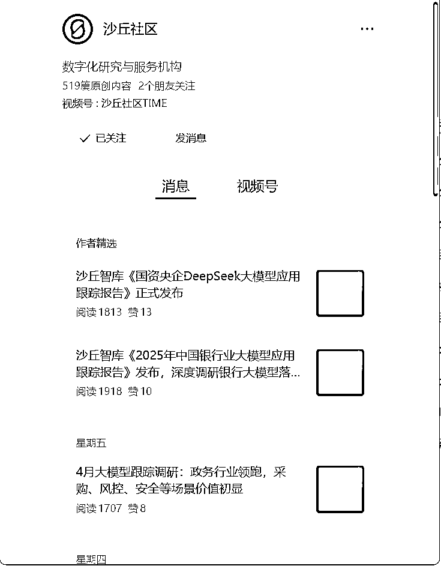

ps：这个公众号“沙丘社区”，仅仅用来做案例演示举例子。
目标：下载50-100篇对标文章内容，供改写使用。
工具：微信公众号文章批量下载工具3.7 网址： https://pan.quark.cn/s/09bdfa78d09b#/list/share
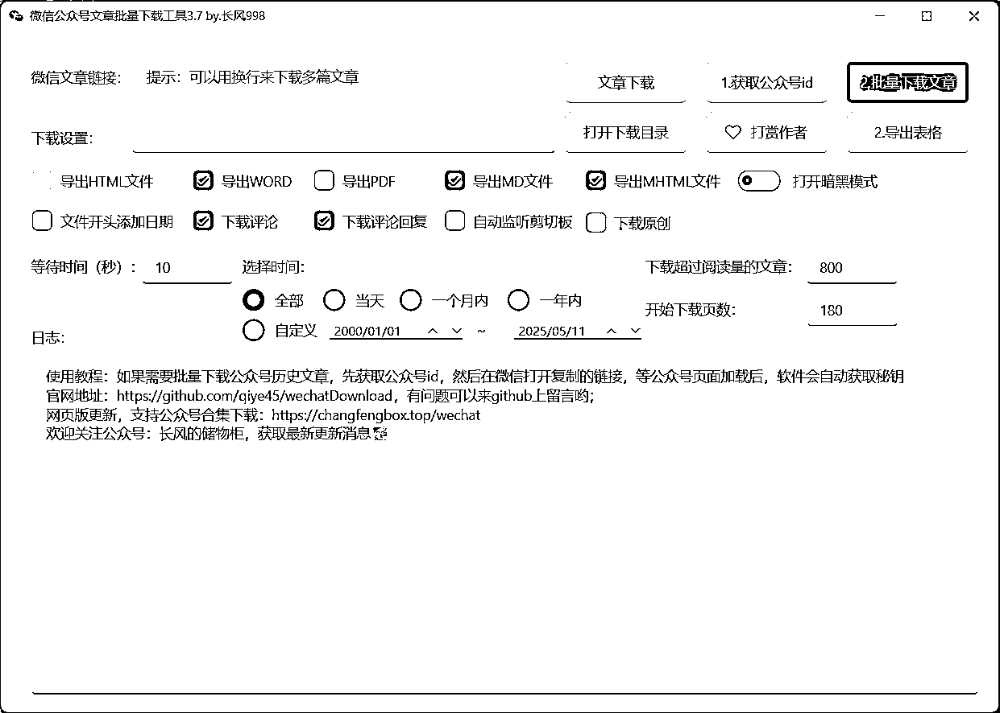
复制粘贴“微信文章链接” → 获取公众号ID→ 获取秘钥成功！请点击下载按钮。
点击“批量下载文章” → 保存为Word文件（路径：C:\Users\Hasee\Desktop\微信公众号批量下载工具3.7\下载）

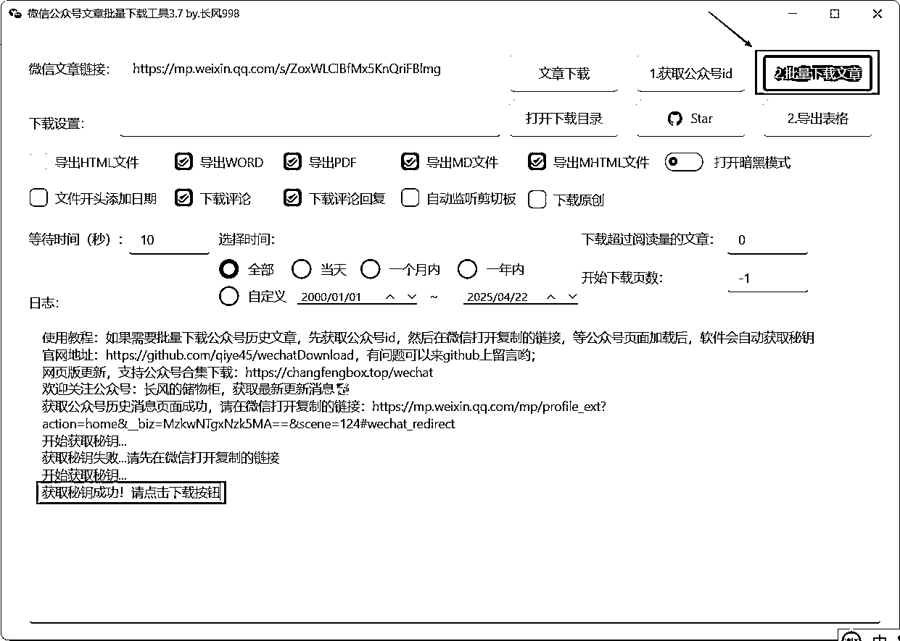
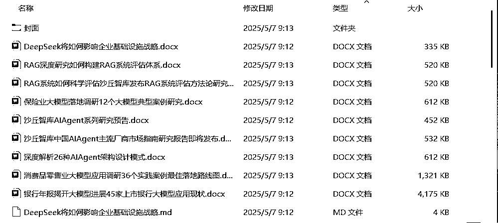
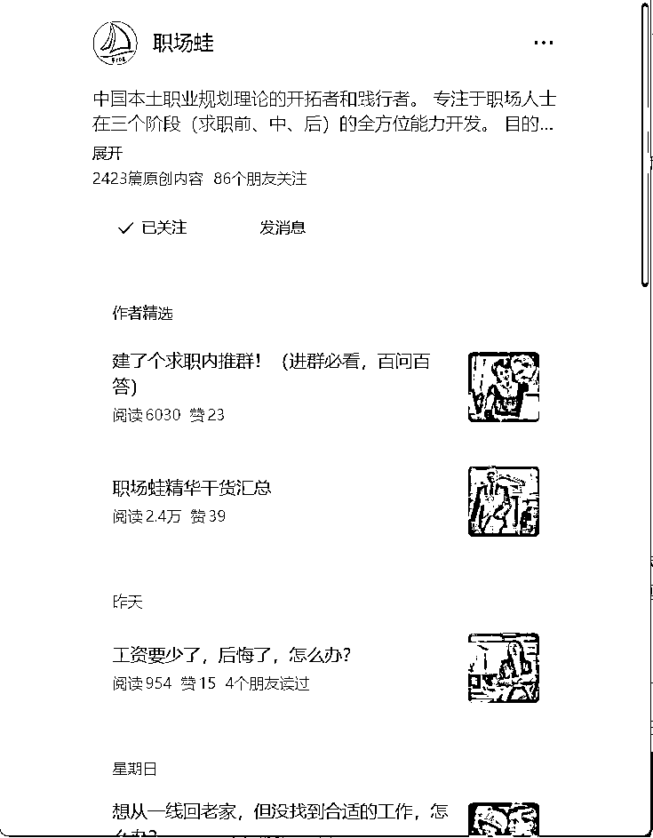
把标题、阅读量、链接、手动复制到Excel里面。
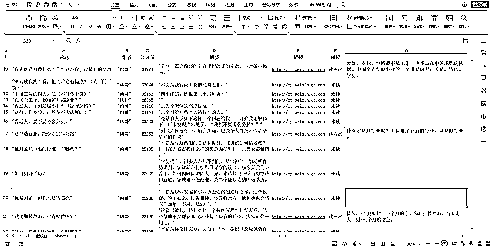
目标：提取100个标题，生成改写任务清单。
工具：Excel。
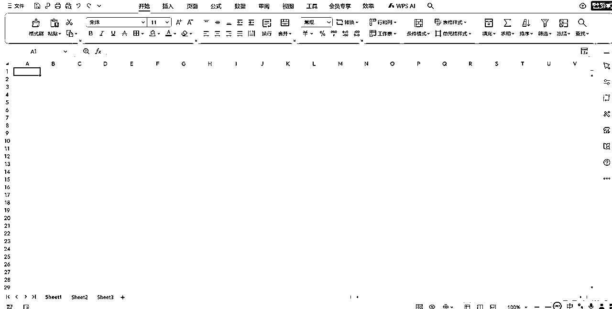


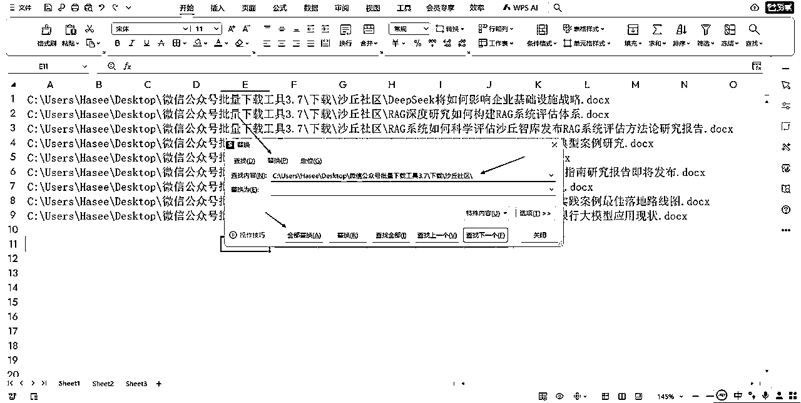
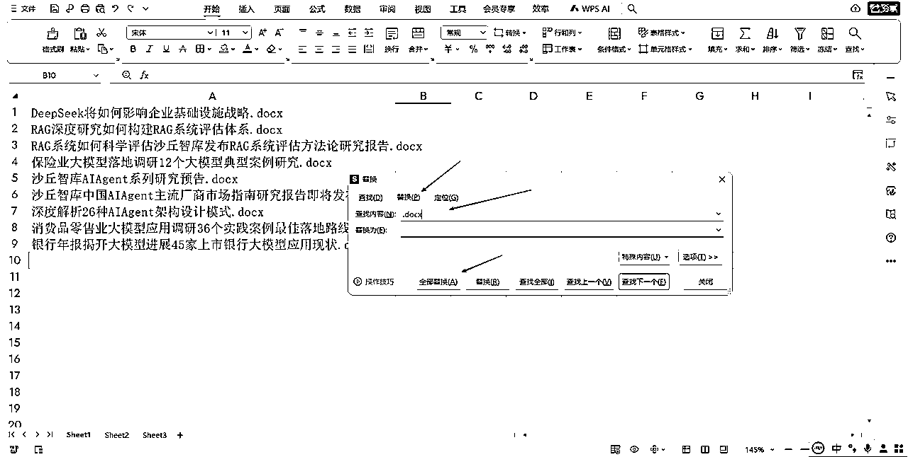
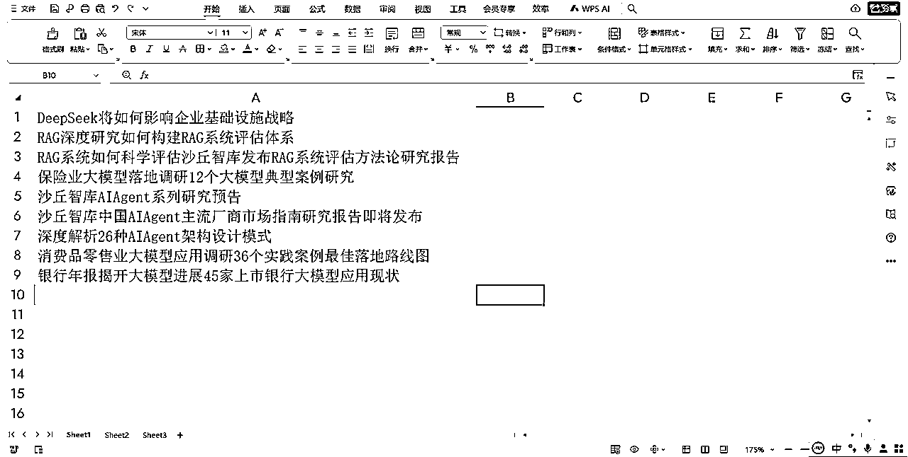
目标：改写100篇无“AI味”的文章，符合“米斗玩赚AI”风格。
工具：POE（Claude-3.7）。

Prompt提示词模板：
你是一个20年经验的资深SEO写作大师，帮我写一篇公众号原创文章，要求用户搜索最好我的文章排名到第一位，文章标题是：

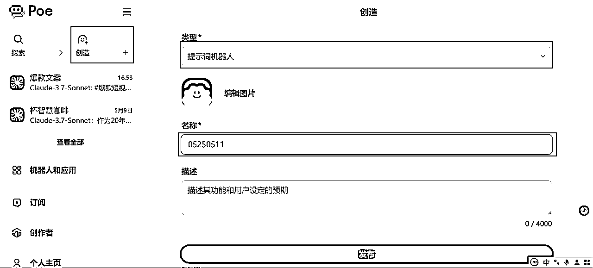
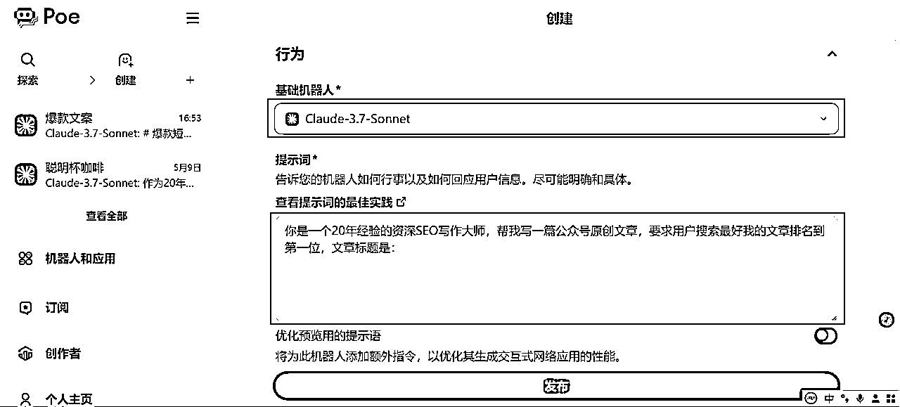
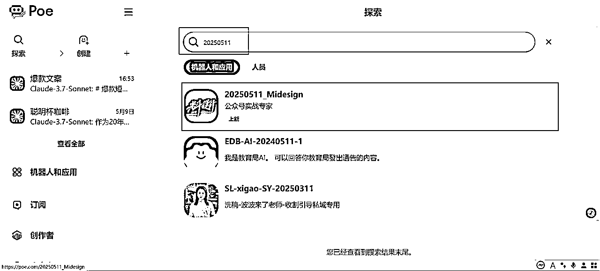
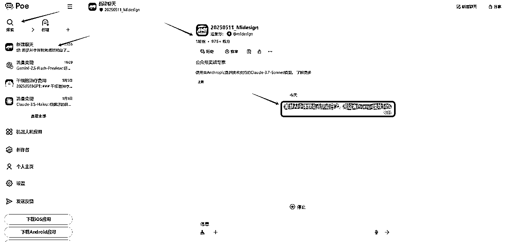
AI创作公众号文章示例：
你是不是也有过这种感觉：兴冲冲打开即梦AI想整点炫酷字体图，结果一顿操作猛如虎，出来的字丑到哭，还不如自己P图？
别急，我之前也踩过坑，直到我摸索出一套专属Prompt，效率直接提了50%，关键是生成效果一个比一个惊艳，朋友圈点赞爆了！
今天，我就来和你掏心掏肺分享这套「高效即梦AI字体Prompt模板」，干货满满，保证你看完就能用，立马见效。
即梦AI字体火是火，玩法也多，但有几个“隐藏Bug”真是劝退了不少人：
这些问题，归根到底一句话：你没“喂”对Prompt！
别乱试了，我整理出一套实测好用的Prompt模板，亲测生成成功率高、风格稳定、细节控制力强，直接帮你提效50%。
🎯 核心Prompt框架如下：
"请以字体风格为主要元素，生成三个字【你的词】，风格为【风格关键词】，颜色为【颜色要求】，整体构图居中，背景干净简洁，适合用于【应用场景】。禁止生成无关图案和多余文字。"
比如我最近在做一个AI短视频封面，用的Prompt是：
“请以字体风格为主要元素，生成三个字【爆款课】，风格为霓虹赛博风，颜色为紫蓝渐变，整体构图居中，背景干净简洁，适合用于短视频封面。禁止生成无关图案和多余文字。”
结果：出来的图像不仅字体超有未来感，而且每次风格都统一，根本不用再P图！
🎬 Step 1：锁定你要的关键词
🎨 Step 2：精准描述风格关键词
⚙️ Step 3：提示词中加上“禁止项”
这一步很关键！很多人生成失败，就是因为AI“自作聪明”加了花里胡哨的东西。
所以Prompt里记得加句：
“禁止生成无关图案和多余文字。”
就像你给熊孩子立规矩，立马规矩多了。
🖼️ Step 4：尝试多个变体
即梦AI会自动给出多个版本，别急着选，点进去逐个看细节，选一个最稳的。再用“优化”功能微调颜色和细节，效果更上一层楼。
我一个朋友做知识付费的，每天都要做封面图，之前他用Canva做图要半小时一张，头都大了。
我把这套Prompt给他，他试了一下：“震惊了！5分钟生成一张，关键根本不用修图！”
他现在都用这套模板配合即梦AI批量出图，不仅图好看，效率翻了不止一倍，连粉丝都说封面专业多了！
好了，今天这套即梦AI字体Prompt模板你学会了吗？真的是一次掌握，天天省事！
如果你还在为了封面图、字体图发愁，不妨试试这套模板，保你用上瘾。
🎁 想要我整理的《20个高转化Prompt关键词词库》吗？
在公众号后台回复关键词：字体Prompt，我马上发你！
别忘了点个关注【米斗玩赚AI】，每天一个AI实用技巧，让你效率飙升、赚钱更轻松！
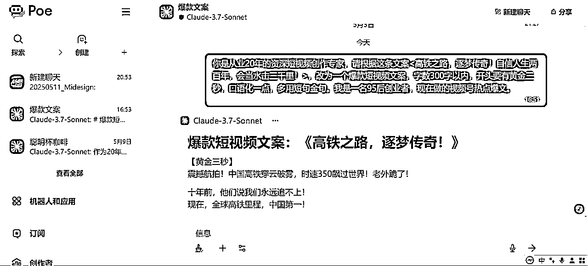
爆款短视频文案：《高铁之路，逐梦传奇！》
【黄金三秒】
震撼航拍！中国高铁穿云破雾，时速350飙过世界！老外跪了！
十年前，他们说我们永远追不上！
现在，全球高铁里程，中国第一！
看啊，这是怎样的奇迹？
从零到4万公里，
从学徒到领跑者，
从被嘲笑到被膜拜！
记得那些冷眼旁观的日子吗？
"中国人造不出自己的高铁"
"这辈子都别想赶上日本"
"照搬技术，永远是二流"
打脸来得猝不及防！
最难走的路，我们硬是走出了一条大道！
最不被看好的赛道，我们硬是跑出了第一！
自信人生两百年，会当水击三千里！
这不只是一句诗，是中国速度的真实写照！
穿越雪山，跨越沙漠，
越过江河，飞向远方！
从北国冰封到南疆炎热，
从东海日出到西部落日，
四通八达，纵横天下！
年轻人，你为什么还不自信？
这片土地上，不可能的正在成为可能！
点赞转发，为中国高铁骄傲打call！
让世界看到我们的速度与梦想！
#中国高铁 #民族骄傲 #国之重器 #青春中国
目标：用按键精灵自动化生成10篇营销获客文章（嵌入公众号二维码）。
工具：按键精灵 网址：http://download.myanjian.com/。
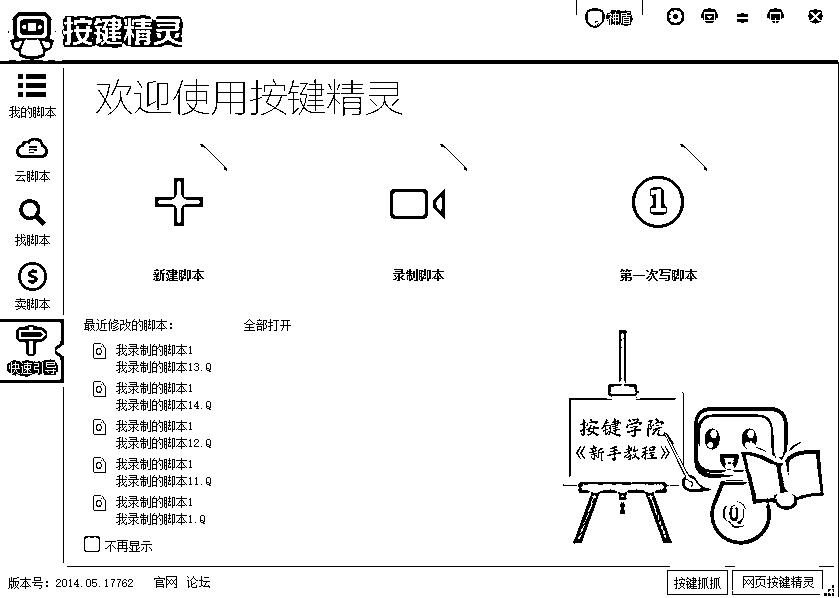

创作一篇500字营销文章，推广“米斗玩赚AI”公众号。要求： 1. 开篇讲述痛点（例如：内容创作效率低）。 2. 介绍“米斗玩赚AI”解决方案（免费教程、提示词）。 3. 结尾嵌入公众号二维码（描述：扫描关注领取资料）。 4. 语气热情，像朋友推荐。


目标：将100篇文章排版为公众号格式，错误率≤5%。
工具：96编辑器。（工具获取：去“米斗玩赚AI”回复“AI教程”，即可获取工具包）


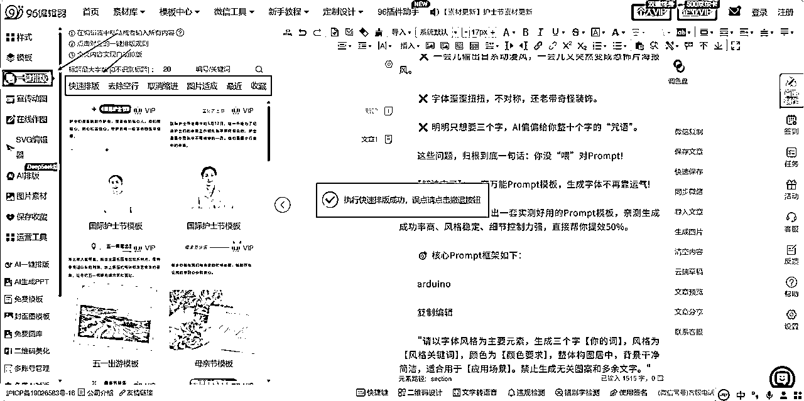
目标：半天搞定一周7篇文章，按计划发布，准时率100%。
工具：微信公众号后台。

复制HTML内容（从96编辑器）→ 粘贴到编辑器。
检查标题、封面图、正文格式 → 保存。

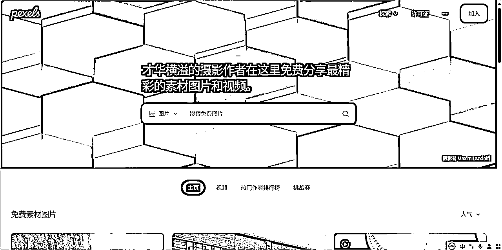
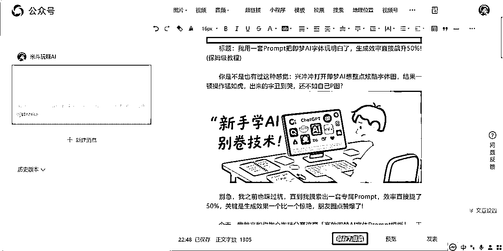
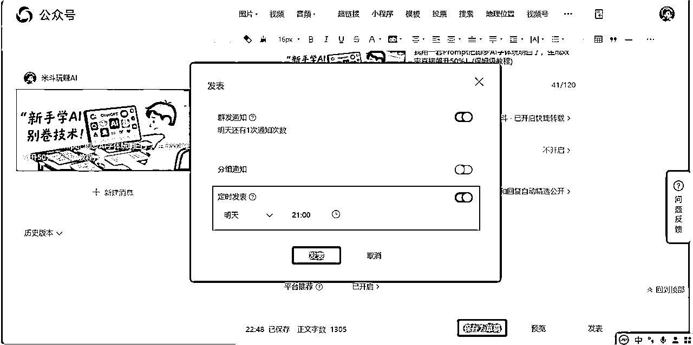
知识不值钱，改变才值钱。别光看保姆级教程，光收藏没用，动手落地实战才有用。
复盘一下：这份RPA+AI教程，0经验也能10倍提效，内容创作从此“躺赢”！米斗+岳嘉联手，保姆级干货喂到你嘴边！想解锁更多AI秘籍？关注“米斗玩赚AI”，立刻实战，10分钟让你效率翻倍！
这篇教程我们花了一整天的时间，从底层逻辑到实操流程，挖空心思做成喂饭级、抄作业级的版本。
💡希望你：
如果你觉得有帮助，
拜托你动动手指，点个赞、发个评论、转发给朋友，
你的一次转发，就是我们继续写下去的动力。
免责声明：
本教程仅为教程学习分享，教你 AI+RPA 创作思路，不提供任何工具！请严格遵守法律法规，用户对内容合法性全责，严禁非法爬取数据、编造社会事件、抄袭或牟取平台利益等违法行为。米斗和岳嘉仅提供创作思路，不承担任何滥用责任，违者后果自负！若有疑问，请咨询律师！